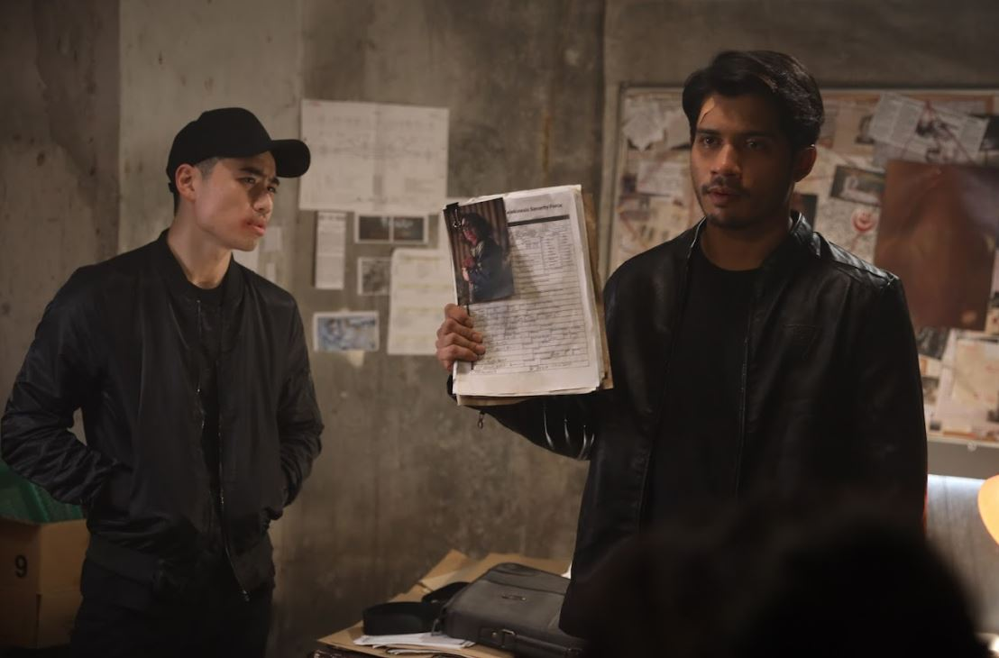
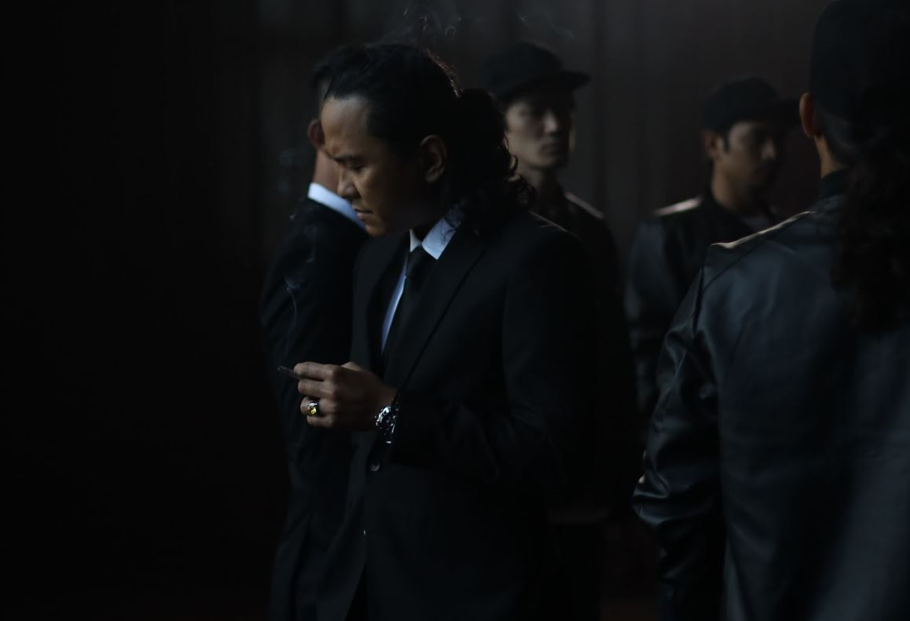

Pengarah Box Office, Syafiq Yusof Kembali Dengan Supertele Eksklusif "Telekinesis"
Selepas kejayaan filem aksi nombor 1 paling laris di Malaysia, Sheriff, pengarahnya Syafiq Yusof kembali dengan "Telekinesis", sebuah naskhah eksklusif hanya di Astro First bermula 10 Oktober.

Penonton boleh menikmati karya sains fiksyen (sci-fi) ini menerusi platform Astro saluran 480 atau On Demand dan Astro GO, serta peranti pilihan anda melalui sooka bermula 10 Oktober ini.
Telekinesis boleh dilanggan pada satu harga iaitu RM16.20 di platform Astro, manakala RM 19.50 di platform penstriman sooka untuk tempoh 48 jam.
Naskhah ini juga menyaksikan Syafiq kembali menghasilkan karya eksklusif untuk tayangan di platform Astro First, selepas mencipta fenomena melalui filem Penunggang Agama dan Penunggang Agama 2 pada tahun 2021, dengan mencatat kutipan lebih RM5 juta.
Syafiq Yusof berkata, dia mahu membawa penonton ke sebuah dunia yang penuh dengan aksi, ketegangan dan misteri.

Sci-fi memberi ruang kepadanya untuk meneroka kisah yang lebih mendalam, di mana penonton akan dihidangkan bukan sekadar pertempuran kuasa, tetapi pergolakan emosi dan pengkhianatan yang merungkai sebuah misteri.
Penonton akan dibawa ke dalam konflik setiap watak, di samping menikmati visual yang menarik.
Telekinesis pasti membuat penonton tidak senang duduk, tambahan pula watak-watak dalam karya ini digerakkan dengan begitu berkesan oleh barisan pelakon hebat seperti Beto Kusyairy, Yusuf Bahrin, Aman Graseka, Nick Davis, Hasnul Rahmat, Wanji Aswand, Shabby dan ramai lagi.
Saksikan Telekinesis bersama insan tersayang hanya di Astro First. Ikuti perkembangan dan info terbaru mengenai arahan Syafiq Yusof ini di akaun media sosial Astro First seperti Instagram dan TikTok. Gunakan # #Telekinesis di media sosial.

Munirah Aziz
Seorang gadis biasa yang suka membaca dan menulis. Saya sentiasa memerhati isu semasa dalam dan luar negara dengan tujuan informasi yang disampaikan sentiasa tepat tanpa cacat cela.